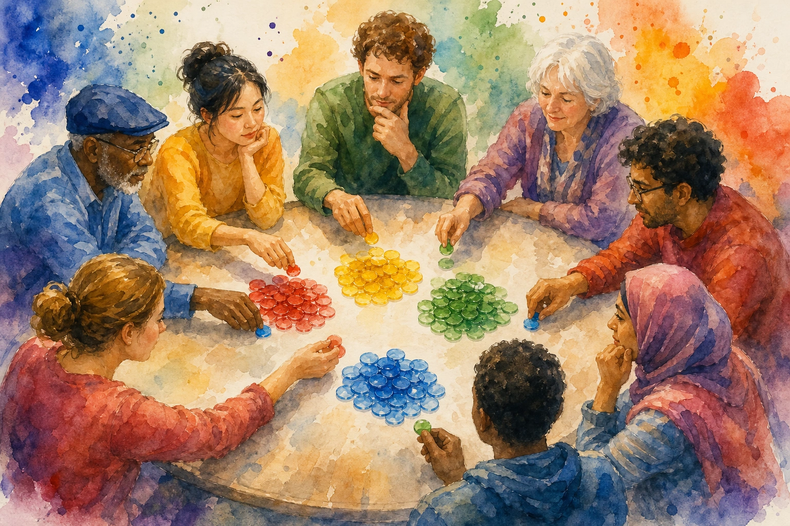

Eric J Ma's Website
written by Eric J. Ma on 2026-09-26 | tags: python programming ai agents creativity inference open source decision models machine learning
In this post, I share how I forked Seems, a Python-flavored judgment language, into seems-laya, swapping the hosted judge for an open-weight model running on my own machine. I walk through the one-file swap, getting judgment syntax into plain Python imports and marimo notebooks, and the concurrency, calibration, namespace, and bytecode-cache surprises along the way, most of them fixed by my coding agent. I also wrestle honestly with whether the work was creative at all. If I can't tell the difference between interpolation and invention, how would any of us know when a machine crosses that line?
Read on... (1601 words, approximately 9 minutes reading time)written by Eric J. Ma on 2026-09-25 | tags: ai discord modal python agents software community coding agents discord bots knowledge base
In this post, I share how I built Sage, a community-wide Discord chat agent, by simply wrapping a standard coding agent inside a persistent container. I'll walk you through the surprisingly straightforward architecture: a websocket, a subprocess, and a single hand-curated markdown file. We'll explore how multiplayer settings shift the rules around grounding, consistency, and cost, and why keeping the stack boring actually makes it more reliable. If you've ever wondered how to scale an AI assistant beyond a single user without overcomplicating things, what's the simplest way you could start building one for your own community?
Read on... (1690 words, approximately 9 minutes reading time)written by Eric J. Ma on 2026-09-21 | tags: gxp ai validation compliance fda pharmaceuticals biotech machine learning data science quality assurance
In this post, I share what I learned at a conference on AI in GxP, the regulations keeping medicines and devices safe, arriving from the research side where the acronym meant nothing to me three months ago. I sketch a map of SOPs, validation, and inspections, and how stochastic AI systems force a rethink: defining a range of acceptable behavior instead of pass/fail checks. I close with what data scientists can offer, from model cards to evaluation harnesses. If regulators set the principles but leave the numbers to us, who gets to decide what "good enough" means?
Read on... (3496 words, approximately 18 minutes reading time)written by Eric J. Ma on 2026-09-20 | tags: hardware review ai conference notes obsidian agents recorder productivity gxp
In this post, I share my hands-on review of the PLAUD Note Pro, a credit-card-sized recorder that carried me through a two-day conference on AI in GxP. I describe how it captured twenty-odd talks, survived two days without a charger, and let me highlight key moments with a single button press. I also walk through feeding the transcripts and slide photos into my agent pipeline and Obsidian vault. If a device this simple can disappear into a workflow and quietly do one job well, what else might we be overcomplicating?
Read on... (631 words, approximately 4 minutes reading time)written by Eric J. Ma on 2026-09-11 | tags: decision-making bayesian probability consensus teams facilitation collaboration uncertainty belief elicitation

When my team was stuck talking past each other with no slam dunk option in sight, I had everyone bet 1,000 points of funny money across the options, and the allocations revealed the team's collective belief distribution. It beats voting because it captures preference strength and confidence separately. Curious how a 70-point bet and a 900-point bet unblocked the discussion?
Read on... (1204 words, approximately 7 minutes reading time)written by Eric J. Ma on 2026-08-30 | tags: ai learning learning teaching retreat education community growth ai practice compounding
In this post, I share why Dan Chen and I are running the Learn Anything with AI retreat: a five-day, in-person gathering built on the idea that AI can either hand you answers you'll forget or accelerate genuine understanding. Drawing on my own journey from lab science to computing, I explore learning science, the cognitive debt of skipping deliberate practice, and why teaching what you learn makes it stick. The retreat week is for acquiring the skills of using AI to learn anything; mastering new fields is what those skills then deliver. What could a year of practicing those skills do?
Read on... (2306 words, approximately 12 minutes reading time)written by Eric J. Ma on 2026-08-07 | tags: quantum computing bayesian probability qubits entanglement interference superposition sampling inference amplitudes
In this post, I share what I've learned about quantum computing from the perspective of a probabilistic Bayesian. I strip away the physics to reveal a familiar picture: qubits as amplitude vectors whose squared magnitudes are probabilities, gates that shape distributions through interference, and measurement as sampling. The parallel to Bayesian inference is striking. Our priors and likelihoods shape posteriors; quantum gates shape amplitudes. What if the quantum computer isn't a magic box, but a sampler purpose-built for the combinatorial spaces we already struggle to navigate classically?
Read on... (1989 words, approximately 10 minutes reading time)written by Eric J. Ma on 2026-07-27 | tags: learning ai survey retrieval practice spaced repetition socratic method metacognition bloom's taxonomy
In this post, I share what I learned from a summer spent reading the research on learning with AI. The biggest takeaway? AI doesn't help or harm learning on its own; it simply amplifies the cognitive habits you bring to it. If you passively ask it for answers, it breeds over-reliance. But if you use it to retrieve, defend, and test your own thinking, it becomes an infinitely patient tutor. I map the evidence, share practical prompt swaps, and even quiz you along the way. So I'm curious: the next time you open a chatbot, who will be doing the thinking?
Read on... (3049 words, approximately 16 minutes reading time)written by Eric J. Ma on 2026-07-24 | tags: ai agents code review cognitive debt software engineering llms pull requests understanding learning micro-worlds
I map a growing consensus: now that AI agents write so much of our code, producing it is cheap, but *understanding* it is the real bottleneck. I share my own struggles reviewing forty-file diffs and explore how cognitive debt quietly accrues when we approve polished PRs we can't actually explain. Drawing from thinkers like Geoffrey Litt and Simon Willison, I highlight practical techniques to fight back, like literate diffs, interactive micro-worlds, and quizzes. (I even quiz you on this very post!) How are you keeping your mental model alive when your agent types faster than you can think?
Read on... (2673 words, approximately 14 minutes reading time)written by Eric J. Ma on 2026-07-23 | tags: bayesian outliers automation hierarchy statistics reproducibility dose response data analysis
Bayesian modeling with heavy-tailed likelihoods and hierarchical structure automates away manual data analysis tasks like hand-flagging outliers. By using Student-t likelihoods and partial pooling, your pipeline handles messy data points and weird curves in a principled, reproducible way. No clicking through software required. What could your team do with all those afternoons back?
Read on... (1968 words, approximately 10 minutes reading time)